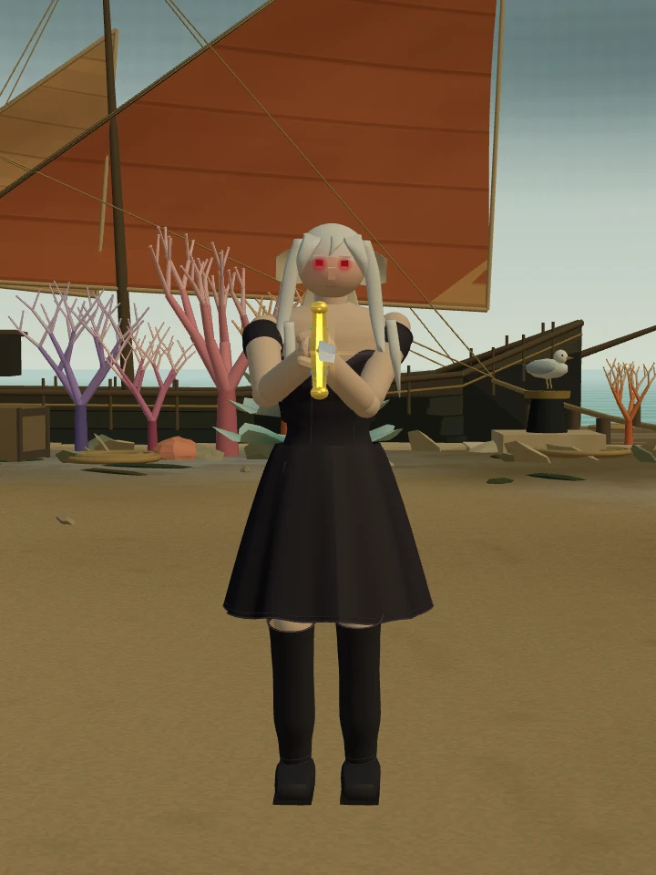
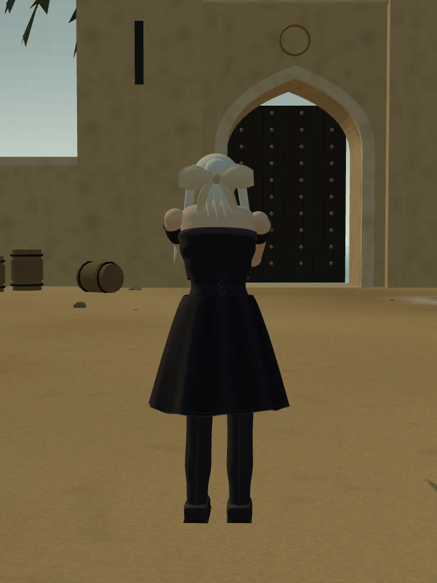
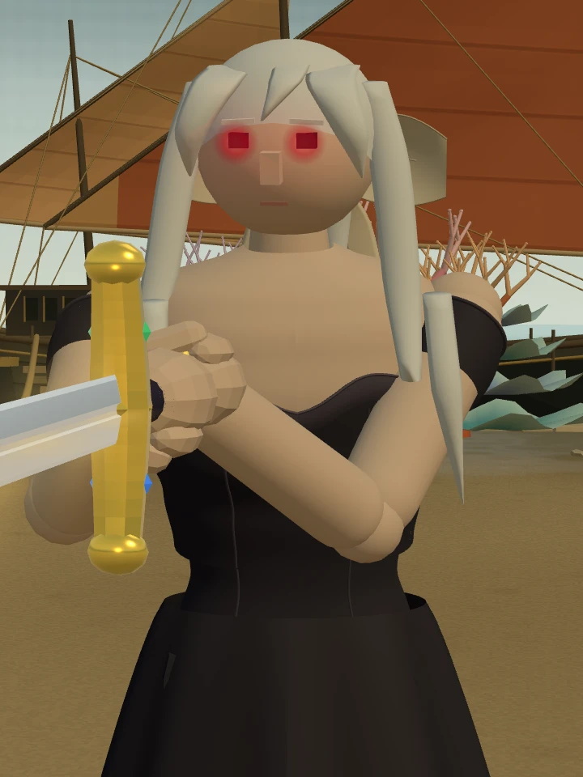
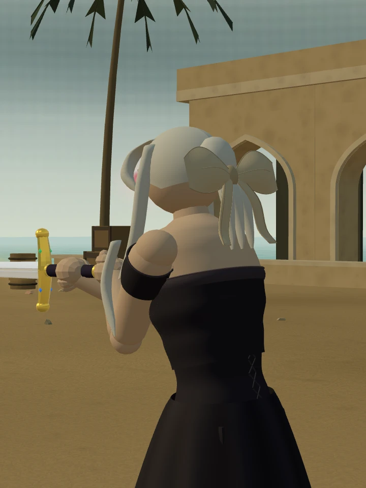
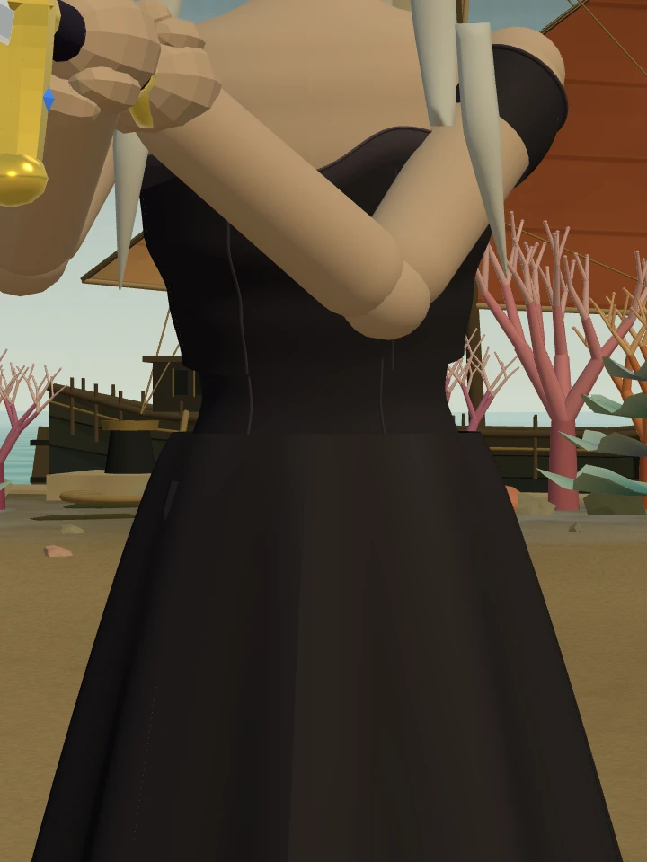
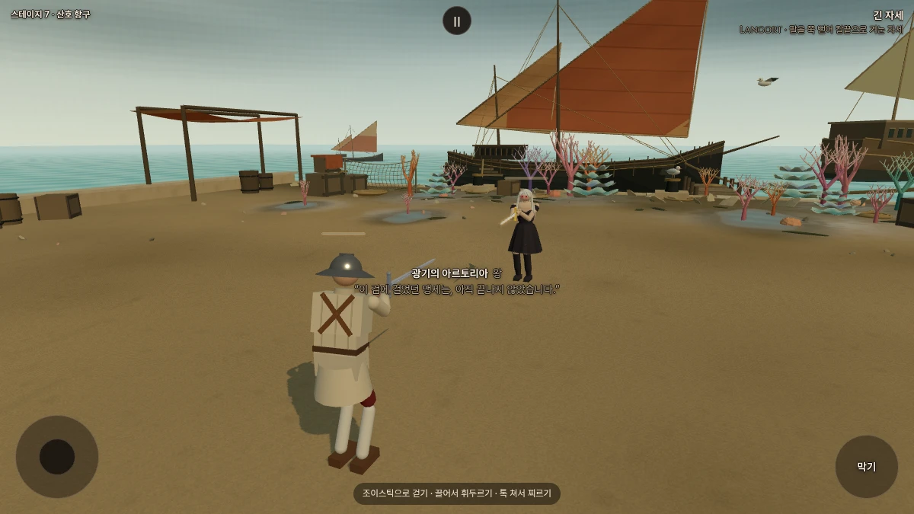

Stillness · 적막
검을 든 무도회의 왕
검은 드레스와 긴 부츠.
은발 뒤에 묶은 커다란 아이보리 리본.
아르토리아 얼터 · 새 외형 시안
아르토리아 · 앞과 뒤




어깨를 드러낸 검은 드레스, 잘록한 허리에서 퍼지는 치맛자락과 무릎을 감싼 부츠로 형태를 잡았습니다. 원래의 은발과 엑스칼리버, 붉은 안광을 유지했습니다.
원래 모습과 새 얼터


같은 조명·카메라·축척의 게임 모델 관찰 화면. 비교를 위해 무기를 숨기고 팔을 내렸습니다.
어깨선·허리선·리본 자세히 보기





움직일 때의 모습
4초 · 실제 AI 동작을 따라가는 관찰 카메라입니다. 복장이 보이도록 플레이어의 모습만 숨겼습니다.

갑옷 방어를 제거한 설정은 유지했습니다. 드레스와 부츠에 방어력을 추가하지 않았으며, 엑스칼리버·힘·체력·AI·검술은 그대로입니다.
기존 산호 항구에서 복장을 확인하는 검토판입니다. 일반 여정의 상대 배정은 유지합니다.
이전 시안과 비교
이전 비키니 시안은 사용자 피드백으로 교체했습니다.